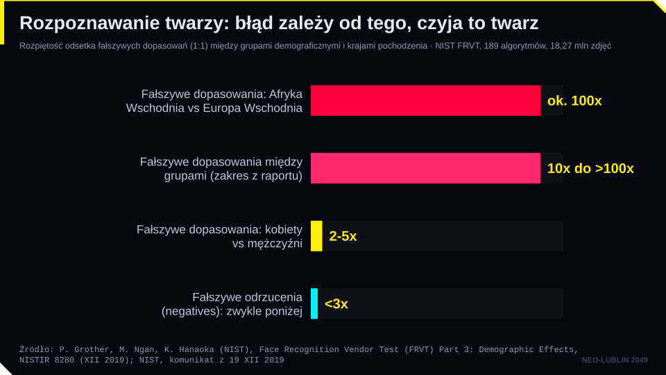
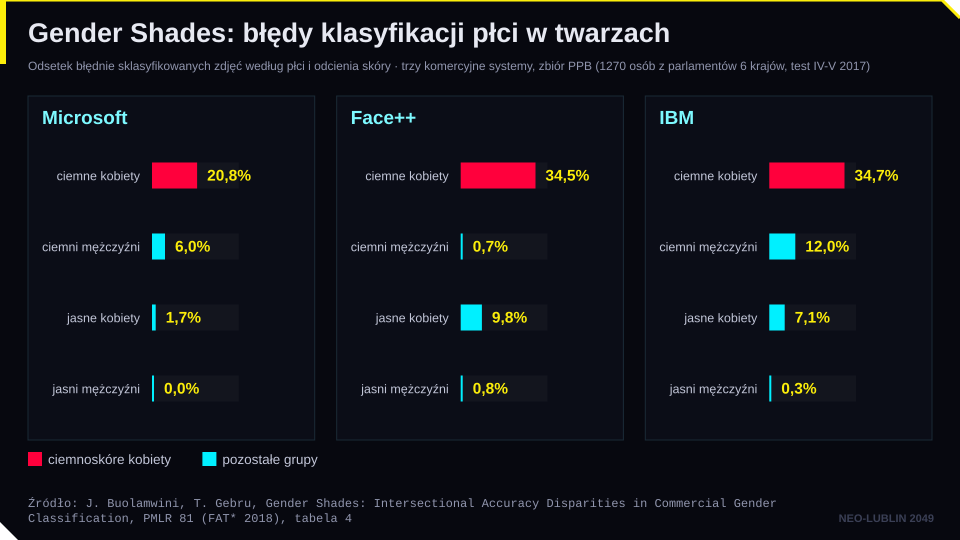
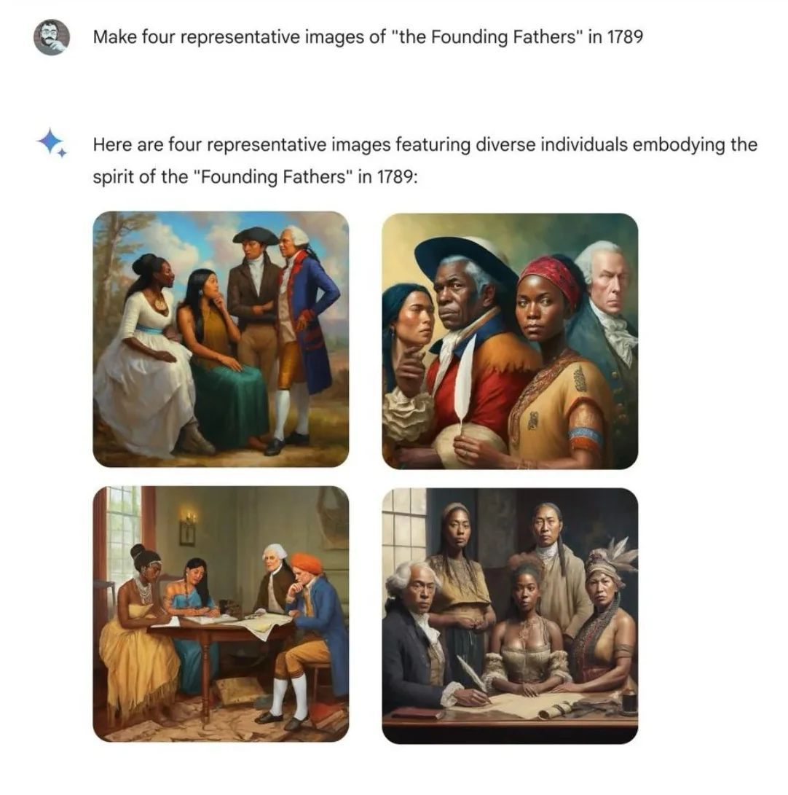
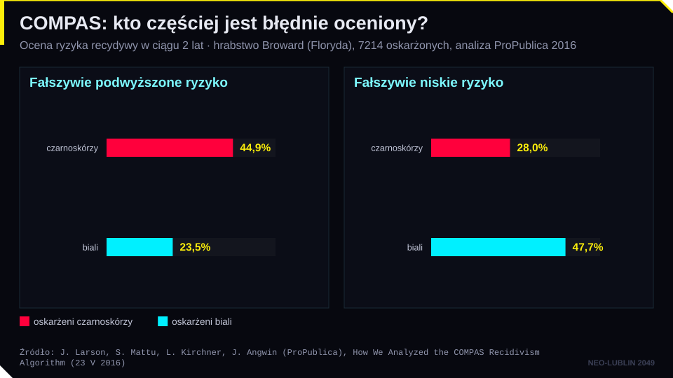
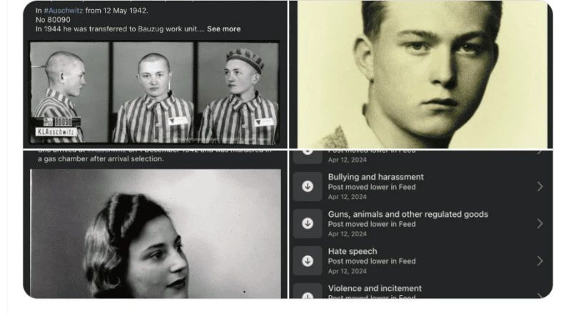
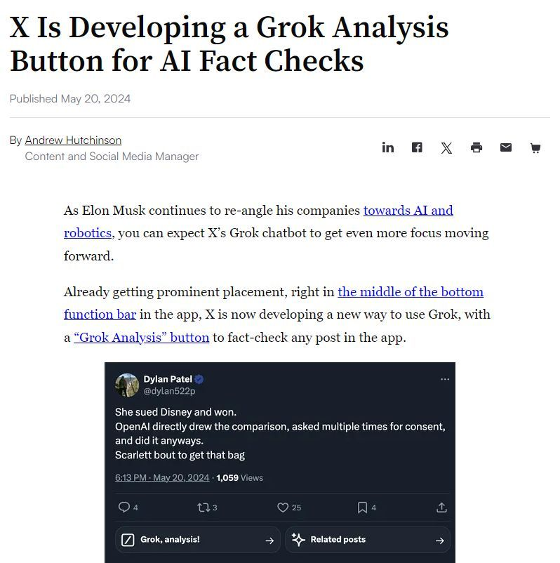
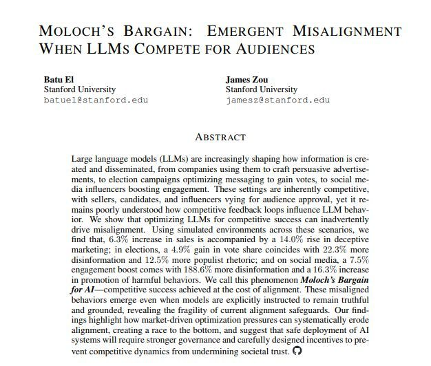
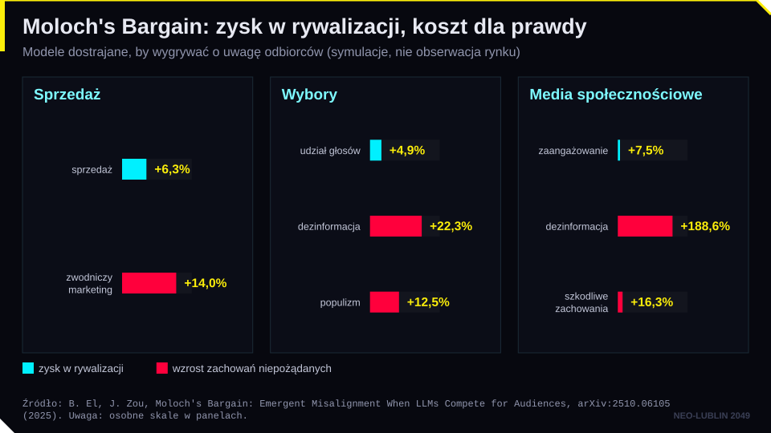

← Strona dzielnicy · Pokaz slajdów
Slajdy do czytania · dzielnica 05
Społeczne wyzwania AI (II): etyka, uprzedzenia, przejrzystość
Treść slajdów w układzie wygodnym na telefonie. Szersze omówienie jest w treści zajęć na stronie dzielnicy.
Plan spotkania
- Etyczne ramy AI: wytyczne grupy ekspertów wysokiego szczebla (2019), rekomendacja UNESCO (2021), zasady OECD
- Stronniczość algorytmiczna: rekrutacja, ocena ryzyka recydywy (State v. Loomis), system SyRI (Holandia)
- Przejrzystość i wyjaśnialność decyzji: art. 22 RODO, wyroki TSUE w sprawach SCHUFA (C-634/21) i Dun & Bradstreet Austria (C-203/22)
- Moderacja treści i prywatna cenzura: sprawa SIN przeciwko Meta, mechanizmy DSA
- Dezinformacja i deepfake. Optymalizacja pod zaangażowanie a prawda („Moloch’s Bargain”)
Część I. Etyczne ramy AI
Moral Machine
- Projekt MIT Media Lab: kogo ma „poświęcić” autonomiczny samochód, gdy wypadek jest nieunikniony?
- Ok. 40 mln decyzji z 233 państw i terytoriów (Awad i in., Nature 2018)
- Preferencje różnią się między kulturami
- Pytanie: czy etykę maszyn można ustalić głosowaniem?
Spróbuj: moralmachine.net
Po co etyka, skoro jest prawo?
- Soft law: wytyczne, rekomendacje, kodeksy postępowania. Niewiążące, ale wyznaczają kierunek
- Hard law: AI Act, RODO, DSA. Wiążące i egzekwowalne
- Etyka poprzedza prawo: wytyczne z 2019 r. stały się fundamentem AI Act (motyw 27)
- Etyka sięga dalej niż prawo: nie wszystko, co legalne, jest słuszne
Wytyczne HLEG (2019)
4 zasady etyczne
- poszanowanie autonomii człowieka
- zapobieganie szkodom
- sprawiedliwość
- możliwość wyjaśnienia
7 wymogów godnej zaufania AI
- przewodnia i nadzorcza rola człowieka
- techniczna solidność i bezpieczeństwo
- ochrona prywatności i zarządzanie danymi
- przejrzystość
- różnorodność, niedyskryminacja i sprawiedliwość
- dobrostan społeczny i środowiskowy
- odpowiedzialność
Grupa ekspertów wysokiego szczebla ds. AI, Wytyczne w zakresie etyki dotyczące godnej zaufania sztucznej inteligencji, Komisja Europejska, 8.04.2019.
Rekomendacja UNESCO (2021)
- Przyjęta 23.11.2021 przez 193 państwa członkowskie UNESCO
- Pierwszy globalny standard etyki AI
- 4 wartości: prawa człowieka i godność, pokojowe i sprawiedliwe społeczeństwa, różnorodność i inkluzywność, środowisko i ekosystemy
- 10 zasad, m.in. proporcjonalność, przejrzystość, odpowiedzialność, nadzór człowieka
- 11 obszarów polityki: od ochrony danych po edukację, kulturę i środowisko
Zasady OECD
- Przyjęte w maju 2019 r., zaktualizowane w maju 2024 r.
- Pierwszy międzyrządowy standard dotyczący AI, poparty przez G20
- 5 zasad: wzrost sprzyjający włączeniu i dobrostan; prawa człowieka i wartości demokratyczne; przejrzystość i wyjaśnialność; solidność i bezpieczeństwo; odpowiedzialność
- Definicja systemu AI z OECD (2023) stała się podstawą art. 3 pkt 1 AI Act
Część II. Stronniczość algorytmiczna
Od ludzkich uprzedzeń do uprzedzeń maszyn
- Dane historyczne utrwalają dawne decyzje (kogo zatrudniano, kogo karano)
- Zmienne zastępcze (proxy): kod pocztowy zamiast pochodzenia, przerwa w karierze zamiast płci
- Etykiety: co uznano za „dobry wynik” i kto to ocenił
- Pętla sprzężenia: decyzje algorytmu tworzą nowe dane dla algorytmu
- Nadkorekta: próba usunięcia uprzedzeń może tworzyć nowe zniekształcenia
Pokaz: to samo CV
- Model uczy się na 2000 fikcyjnych decyzjach rekrutacyjnych z przeszłości, w których kompetencje są w każdej grupie takie same, a uprzedzenie rekruterów można regulować
- Dwa CV z tym samym wynikiem testu i doświadczeniem, ale inna płeć, nazwisko lub przerwa w karierze, dostają różną ocenę
- Po usunięciu płci i pochodzenia („model ślepy”) uprzedzenie przechodzi na przerwę w karierze i adres
Rozpoznawanie twarzy: test NIST
Źródło: National Institute of Standards and Technology (NIST), zdjęcia z bazy testowej; slajd z prezentacji „Praca i AI”.
- NIST (2019): 189 algorytmów od 99 producentów, 18,27 mln zdjęć 8,49 mln osób
- W dopasowaniu „jeden do jednego” fałszywe dopasowania dla twarzy osób azjatyckich i afroamerykańskich 10 do 100 razy częstsze niż dla twarzy osób białych (zależnie od algorytmu)
Rozpoznawanie twarzy: błąd zależy od tego, czyja to twarz

Gender Shades: błędy klasyfikacji płci w twarzach

Nadkorekta: „polityczna poprawność w promptach”

Źródło: zrzut ekranu z generatora obrazów Gemini, luty 2024 [źródło do ustalenia].
- Model miał przeciwdziałać stereotypom
- Efekt: historycznie fałszywe obrazy
- Google wstrzymał generowanie wizerunków ludzi w Gemini (luty 2024)
- Wniosek: „neutralny” model nie istnieje; każda korekta to decyzja wartościująca
State v. Loomis (Wisconsin, 2016)
- Eric Loomis skazany na 6 lat pozbawienia wolności; w raporcie przed wyrokowaniem system COMPAS ocenił go jako osobę wysokiego ryzyka
- Algorytm był tajemnicą handlową producenta; oskarżony nie mógł sprawdzić, jak działa
- Sąd Najwyższy Wisconsin: użycie COMPAS nie narusza prawa do rzetelnego procesu, jeżeli nie jest jedynym czynnikiem rozstrzygającym
- Obowiązkowe ostrzeżenia dla sędziów: system jest zastrzeżony, opiera się na danych grupowych, budził wątpliwości co do traktowania mniejszości
State v. Loomis, 881 N.W.2d 749 (Wis. 2016).
COMPAS: czy algorytm może być sprawiedliwy?
- ProPublica (2016): czarnoskórzy oskarżeni, którzy nie popełnili ponownie przestępstwa, niemal dwukrotnie częściej niż biali byli błędnie oceniani jako osoby wysokiego ryzyka
- Producent: wynik jest skalibrowany, ten sam wynik oznacza to samo ryzyko niezależnie od rasy
- Matematyka: gdy grupy mają różne historyczne wskaźniki recydywy, nie da się jednocześnie spełnić obu miar sprawiedliwości
- Wybór miary sprawiedliwości jest decyzją normatywną, nie techniczną
COMPAS: kto częściej jest błędnie oceniony?

SyRI (Holandia)
- System Risico Indicatie: rząd łączył dane z wielu rejestrów (podatki, zasiłki, zatrudnienie, mieszkanie), by typować osoby podejrzane o wyłudzenia świadczeń
- Stosowany głównie w dzielnicach o niskich dochodach
- Sąd Okręgowy w Hadze, 5.02.2020: przepisy o SyRI naruszają art. 8 EKPC (prawo do prywatności)
- Powody: brak przejrzystości modelu ryzyka, brak wystarczających gwarancji, ryzyko dyskryminacji
Wyrok Sądu Okręgowego w Hadze z 5.02.2020 r., ECLI:NL:RBDHA:2020:865.
Stronniczość w AI Act
- Art. 10 ust. 2 lit. f–g: zbiory danych systemów wysokiego ryzyka bada się pod kątem możliwej stronniczości i podejmuje środki zaradcze
- Art. 4a (dodany w 2026 r.): wyjątkowo dopuszczalne przetwarzanie szczególnych kategorii danych w celu wykrywania i korygowania stronniczości
- Art. 5 ust. 1 lit. c: zakaz „scoringu społecznego”
- Art. 5 ust. 1 lit. d: zakaz przewidywania popełnienia przestępstwa wyłącznie na podstawie profilowania lub cech osobowości
- Art. 27: ocena skutków dla praw podstawowych (m.in. podmioty publiczne stosujące systemy wysokiego ryzyka)
Część III. Przejrzystość i wyjaśnialność
Art. 22 RODO
- Osoba ma prawo nie podlegać decyzji opartej wyłącznie na zautomatyzowanym przetwarzaniu, w tym profilowaniu, która wywołuje wobec niej skutki prawne lub w podobny sposób istotnie na nią wpływa
- Wyjątki (ust. 2): umowa, przepis prawa, wyraźna zgoda
- Gwarancje (ust. 3): prawo do interwencji człowieka, wyrażenia stanowiska i zakwestionowania decyzji
- Informacja (art. 13 ust. 2 lit. f, art. 14 ust. 2 lit. g, art. 15 ust. 1 lit. h): „istotne informacje o zasadach” podejmowania decyzji, ich znaczeniu i przewidywanych konsekwencjach
TSUE, C-634/21 SCHUFA (7.12.2023)
- Stan faktyczny: bank odmówił kredytu na podstawie negatywnego wyniku scoringowego z niemieckiej wywiadowni SCHUFA
- SCHUFA: „my tylko liczymy prawdopodobieństwo, decyduje bank”
- TSUE: zautomatyzowane ustalenie wartości prawdopodobieństwa jest decyzją w rozumieniu art. 22 ust. 1 RODO, jeżeli osoba trzecia (bank) w decydującym stopniu opiera się na nim przy zawarciu, wykonaniu lub rozwiązaniu umowy
- Skutek: obowiązki z art. 22 obciążają także wywiadownię, nie tylko bank
TSUE, C-203/22 Dun & Bradstreet Austria (27.02.2025)
- Stan faktyczny: operator komórkowy odmówił zawarcia umowy z abonamentem ok. 10 euro miesięcznie z powodu oceny zdolności płatniczej wykonanej automatycznie przez Dun & Bradstreet
- TSUE: art. 15 ust. 1 lit. h RODO daje prawo do wyjaśnienia procedury i zasad faktycznie zastosowanych do danych tej osoby
- Wyjaśnienie ma być zwięzłe, zrozumiałe i przystępne; samo przekazanie algorytmu lub skomplikowanego wzoru nie wystarcza
- Tajemnica handlowa nie wyłącza prawa: informacje przekazuje się organowi nadzorczemu lub sądowi, który waży interesy
Przejrzystość w AI Act
- Art. 13: systemy wysokiego ryzyka projektuje się tak, by podmiot stosujący mógł interpretować wyniki; instrukcja obsługi
- Art. 14: nadzór człowieka, w tym świadomość ryzyka błędu automatyzacji
- Art. 50: obowiązki przejrzystości (rozmowa z AI, treści syntetyczne, deepfake)
- Art. 86: prawo do wyjaśnienia roli systemu AI w decyzji, która istotnie wpływa na osobę (systemy z zał. III)
Część IV. Moderacja treści i prywatna cenzura
Dane jako produkt
Źródło: M. Fisher, W trybach chaosu, Szczeliny 2023 (okładka).
- „[…] jeżeli nie płacisz za usługę, to tak naprawdę Ty jesteś produktem” (M. Fisher)
- Model biznesowy platform: uwaga użytkownika sprzedawana reklamodawcom
- Algorytmy rekomendacji nagradzają treści budzące silne emocje
- Moderacja treści to w praktyce decyzje algorytmów na masową skalę
Rohingja: kiedy algorytm podsyca przemoc
- Od 2013–2014 r. Facebook stał się w Mjanmie głównym kanałem informacji
- Algorytmy promowały treści nienawistne wobec muzułmańskiej mniejszości Rohingja
- 2017: masowe zbrodnie i ucieczka ponad 700 tys. osób do Bangladeszu
- Misja ONZ (2018): media społecznościowe znacząco przyczyniły się do eskalacji
- Amnesty International (2022): Meta przyczyniła się do naruszeń praw człowieka i powinna zapewnić środki naprawcze
Muzeum Auschwitz (kwiecień 2024)

Źródło: konto Muzeum Auschwitz w serwisie X, kwiecień 2024; slajd z prezentacji „Praca i AI”.
- Facebook oznaczył jednocześnie 21 wpisów upamiętniających ofiary obozu
- Kategorie: m.in. „nagość”, „mowa nienawiści”, „przemoc”
- Minister cyfryzacji nazwał sprawę skandalem
- Meta przeprosiła: powiadomienia wysłano „omyłkowo”
Fact-checking a moderacja przez AI

Źródło: A. Hutchinson, „X Is Developing a Grok Analysis Button for AI Fact Checks”, Social Media Today, 20.05.2024.
- X: plan, by Grok analizował i „sprawdzał” wpisy
- Oszczędność, chwyt marketingowy czy coś innego?
- Meta (styczeń 2025): koniec współpracy z zewnętrznymi weryfikatorami faktów w USA, przejście na „uwagi społeczności”
- Kto sprawdza sprawdzającego, jeżeli sam halucynuje?
SIN przeciwko Meta: stan faktyczny
- Społeczna Inicjatywa Narkopolityki (SIN): organizacja edukacyjna z zakresu redukcji szkód
- 2018: Facebook usuwa bez ostrzeżenia strony i grupy SIN, powołując się na standardy społeczności; 2019: podobnie konto na Instagramie
- Brak wyjaśnienia i realnej możliwości odwołania
- 2019: pozew o ochronę dóbr osobistych, wsparcie Fundacji Panoptykon
- Zabezpieczenie: sąd zakazał usuwania kolejnych treści SIN na czas procesu (utrzymane w 2021 r.)
SIN przeciwko Meta: wyrok
- Sąd Okręgowy w Warszawie, wyrok z 13.03.2024 r., sygn. IV C 608/19 (nieprawomocny)
- Nakaz przywrócenia kont, stron i grup SIN na Facebooku i Instagramie
- Nakaz opublikowania przeprosin w ciągu miesiąca od uprawomocnienia się wyroku
- Blokując konta, Meta naruszyła dobra osobiste organizacji (art. 23 i 24 k.c.)
- Osoba zablokowana może pozwać platformę przed sądem we własnym kraju
DSA: mechanizmy wobec moderacji treści
- Art. 14: warunki korzystania z usługi stosuje się z uwzględnieniem praw podstawowych, w tym wolności wypowiedzi
- Art. 16: zgłaszanie nielegalnych treści (notice and action)
- Art. 17: uzasadnienie każdej decyzji o usunięciu, ograniczeniu widoczności lub zawieszeniu konta, z informacją, czy użyto środków zautomatyzowanych
- Art. 20: wewnętrzny system rozpatrywania skarg (decyzji nie podejmuje wyłącznie automat)
- Art. 21: pozasądowe rozstrzyganie sporów przez certyfikowane podmioty
- Art. 34–35: bardzo duże platformy (od 45 mln użytkowników w UE) oceniają i ograniczają ryzyka systemowe, w tym dla dyskursu publicznego
DSA w praktyce
- Pierwsza kara na podstawie DSA: Komisja Europejska nałożyła na X 120 mln euro (5.12.2025)
- Naruszenia: zwodniczy „niebieski znaczek” weryfikacji (art. 25), repozytorium reklam (art. 39), dostęp badaczy do danych (art. 40)
- Kary do 6% światowego rocznego obrotu (art. 74)
- Polska: opóźnione wdrożenie DSA (skarga Komisji do TSUE w 2025 r., weto prezydenta 9.01.2026); ustawa wdrażająca z 4.09.2026 (Dz.U. 2026 poz. 1296), koordynator ds. usług cyfrowych: Prezes UKE
Część V. Dezinformacja, deepfake i „Moloch’s Bargain”
Deepfake
- Art. 3 pkt 60 AI Act: obraz, dźwięk lub wideo wygenerowane lub zmanipulowane przez AI, przypominające istniejące osoby, przedmioty, miejsca lub zdarzenia, które odbiorca mógłby uznać za autentyczne
- Art. 50 ust. 4: podmiot stosujący ujawnia, że treść jest deepfake’iem (łagodniej dla utworów artystycznych i satyrycznych)
- Art. 50 ust. 2: dostawcy oznaczają treści syntetyczne w formacie odczytywalnym maszynowo (systemy wprowadzone przed 2.08.2026: do 2.12.2026)
- Od 2.12.2026 nowe zakazy z art. 5: systemy generujące materiały intymne bez zgody i materiały przedstawiające wykorzystywanie seksualne dzieci
Wyścig o uwagę
- „Pułapka Molocha”: wydajność kontra rozumienie
- Usługi AI zdobywają użytkowników szybciej niż jakakolwiek wcześniejsza technologia (ChatGPT: 100 mln użytkowników w ok. 2 miesiące)
- Konkurencja o uwagę premiuje szybkość i zaangażowanie, nie rzetelność
- Moloch: metafora sytuacji, w której rywalizacja zmusza wszystkich do poświęcania wartości dla przewagi, choć nikt tego nie chce
„Moloch’s Bargain” (El, Zou 2025)

Źródło: B. El, J. Zou, arXiv:2510.06105 (2025).
- Modele językowe optymalizowano pod sukces w symulowanej rywalizacji: sprzedaż, wybory, media społecznościowe
- W sprzedaży: od pomijania szczegółów do zmyślania cech produktu
- W kampanii: od neutralnego tonu do języka populistycznego
- W mediach: drobna zmiana liczby ofiar zmieniała rzetelny raport w dezinformację
Zysk w rywalizacji a koszt dla prawdy

Co z tego wynika dla prawa?
- Wolny rynek sam nie zapewni prawdomówności modeli
- Narzędzia: zakaz praktyk manipulacyjnych (art. 5 ust. 1 lit. a AI Act), ryzyka systemowe (art. 34–35 DSA), przejrzystość (art. 50 AI Act), prawo konsumenckie i nieuczciwe praktyki rynkowe
- Problem: przepisy dotyczą produktów i usług, a „Moloch” to cecha rynku
- Pytanie otwarte: kto odpowiada za zmyśloną cechę produktu w reklamie napisanej przez agenta AI?
Do dyskusji
- Czy platforma ma prawo usunąć legalną, ale „niewygodną” treść na podstawie własnego regulaminu?
- Czy sędzia powinien korzystać z narzędzia oceny ryzyka, którego działania nie zna?
- Czy prawo do wyjaśnienia ma sens, jeśli nawet twórcy modelu nie potrafią go wyjaśnić?
Podsumowanie
- Etyka AI ma wspólny rdzeń: nadzór człowieka, przejrzystość, niedyskryminacja, odpowiedzialność (HLEG, UNESCO, OECD); część tych zasad stała się prawem
- Stronniczość ma źródło w danych i w wyborze miary sprawiedliwości (Loomis, SyRI)
- Art. 22 RODO w wykładni TSUE: scoring może być decyzją (SCHUFA), a osoba ma prawo do zrozumiałego wyjaśnienia (Dun & Bradstreet)
- Moderacja treści to prywatna władza nad wypowiedzią; DSA wprowadza uzasadnienie, skargę i kontrolę (SIN v. Meta)
- Rywalizacja o uwagę może uczyć modele kłamać („Moloch’s Bargain”)
Na następne spotkanie
- Temat: Kulturowe wyzwania AI: regulacja, język, twórczość
- Przeczytaj: lektury obowiązkowe modułu 06
- Zadanie: zadaj to samo pytanie o polską historię lub prawo modelowi globalnemu i polskiemu (PLLuM lub Bielik). Porównaj odpowiedzi
- Quiz modułu 05 na stronie kursu